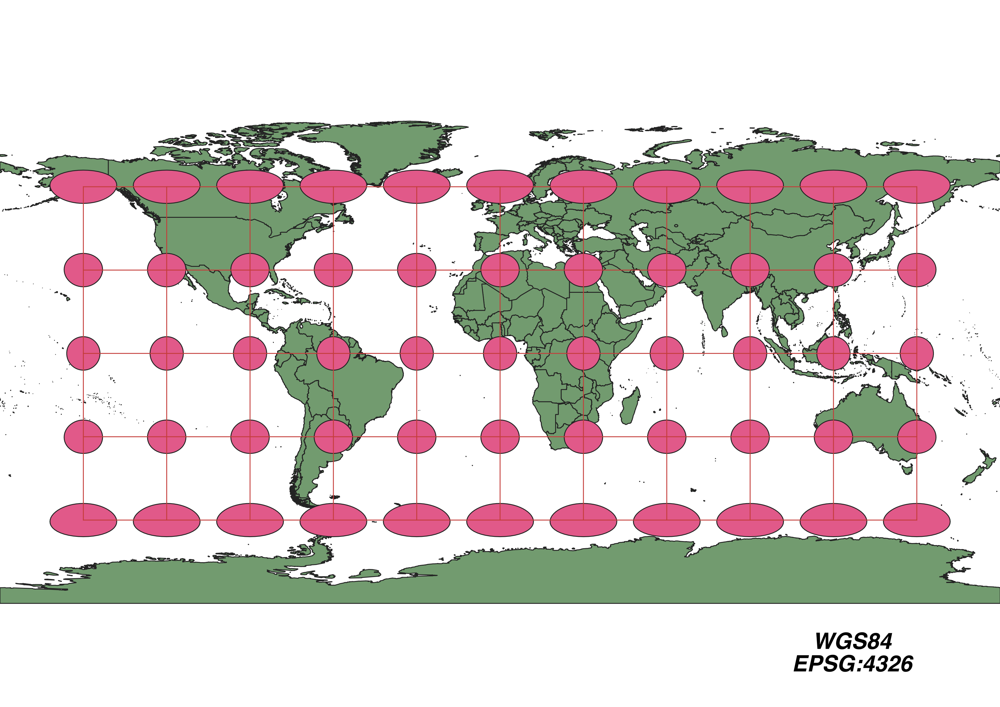
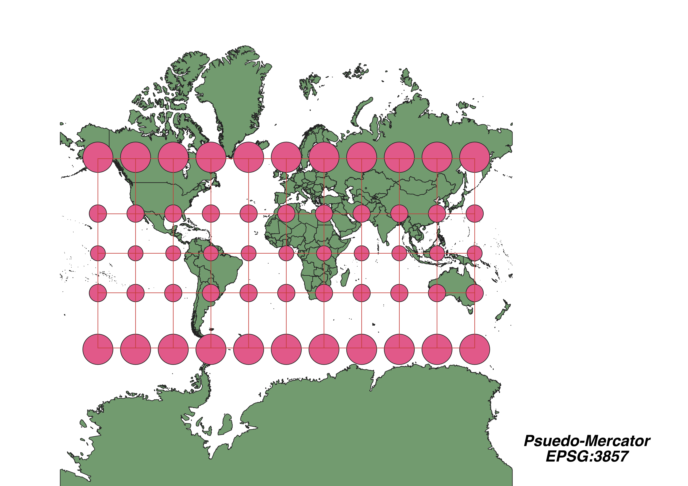
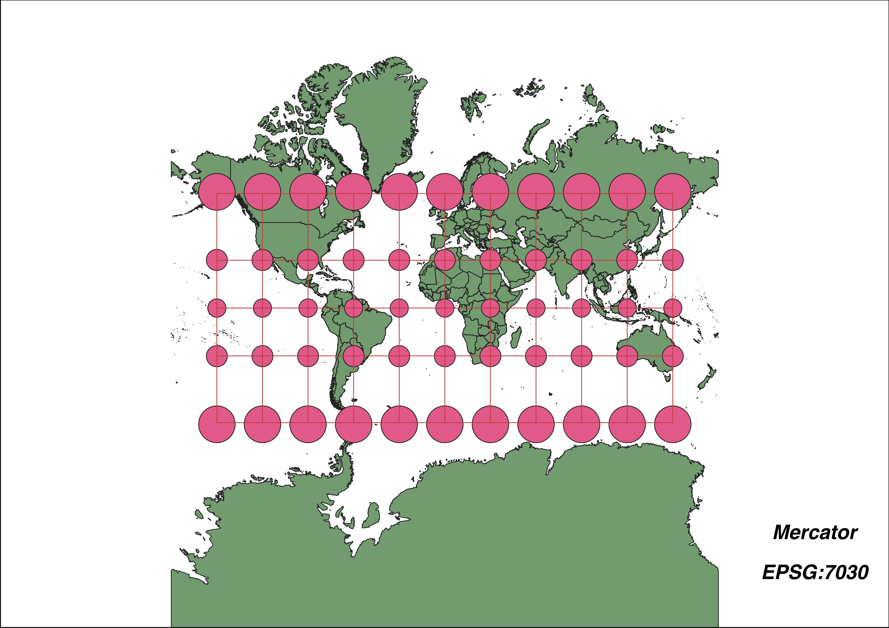

In this project I (Chase Brooks) learned how to display images in different projections
Describe in your own words how you displayed the map in different projections using QGIS
In the bottom right corner on QGIS, I clicked the button displaying the EPSG number of the current projection, searched for the required projections by their EPSG number, and clicked apply.
WGS84 Projection
Some observations: Preserves Shape and Area at the Equator but Greatly Distorts Them at the Poles

Aitoff Projection
Some observations: Preserves Area but Distorts Shape

Psuedo-Mercator Projection
Some observations: Preserves Shape but Distorts Area

Winkel I Projection
Some observations: Preserves Direction but Distorts Shape

Equal Area Cylindrical Projection
Some observations: Preserves Area but Greatly Distorts Shape

Equidistant Conic Projection
Some observations: Preserves Distance but Greatly Distorts Shape

Azimuthal Equidistant Projection
Some observations: Preserves Distance and Direction but Distorts Shape and Area

Google Maps Mercator Projection
Some observations: Preserves Shape but Distorts Area

Winkel Tripel Projection
Some observations: Preserves Direction but Distorts Shape

Now, you should add the following projections on your own:
EPSG: 3857, 53018, 54034, 54027, 102016, and two additional projections that you choose.
Data used for this project
Download Natrual Earth 1:10m Cultural Vector